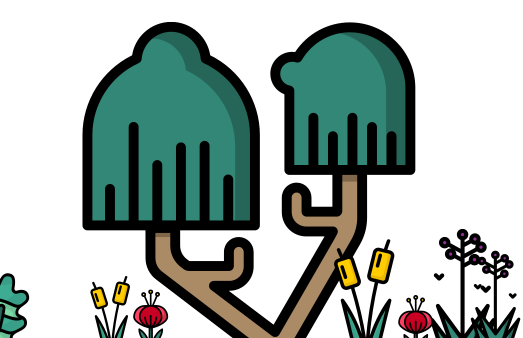

50 nature words you learned that your children no longer knows

In 2007, Oxford University Press removed around 50 nature words from the Oxford Junior Dictionary.
Campaign Objectives
...
How does this affect Berea?
...
References
...
Bluebell Flower
Bluebell Flowers or Virginia Bluebell flowers, now remove from Oxford Junior Dictionary as Bluebell flower grew around Kentucky state being a recognized flower is known for its striking clusters of bell-shaped, pink, and blue flowers that emerge mid-spring.
Badger
A very elusive animal, now remove from the Oxford junior dictionary has only bee captured on camera traps and some occasional sighting. These animals are one of the few animals that are still present but in decline.
Acorn
Acorn, now remove from Oxford Junior Dictionary is a staple food for both the community and the squirrels that dot around the Berea College Campus. Certainly, the essence of acorn has contributed to the ecosystem of Berea's forest too.
Mole
Mole, now remove from Oxford Junior Dictionary is an animal common in Kentucky, considered as pest but an important animal in the soil ecosystem. It is famous for its negative attribute in destroying vegetation but are vital animals in fertilizing and aerating the soil through their tunnels.
Toadstool
Berea town has a deep respect for forest and this includes mushrooms and toadstools that grows on fallen logs and moist soil. With the Pinnacles and Brushy Fork trial grace the town, it is important to remember the word toadstool is an integral part of Berea's livelihood.
Beetle
Beetle, now remove from Oxford Junior Dictionary as out friednly crawler that lives in our backyard. According to the data, over 1000 different type of beetles reside in Kentucky.
Owl
A nocturnal animal, Owl is remove from the Oxford Junior Dictionary. Owls in Berea are common and can be seen on campus perching on the trees with a sudden swoop on squirrels or unexpecting racoons.
Butter Cup Flower
A slight toxic flower, but a flower in Kentucky pastures that have exploded is the signature yellow buttercup flower. Buttercup is the common name for a group of species from the genus Ranunculus. Buttercups are sometimes classified as short-lived perennials, but often grow as winter annuals. However, they have been removed from Oxford junior Dictionary.
Clover plant
Clover, now remove from Oxford Junior Dictionary grew around Berea and its surrounding community as a native weed plant that is an important part fo the ecosystem. The clover plant has many subspecies and the Kentucky clover which is rare has now been brought back into the Bluegrass region.
Raven
Raven and crow, now remove from Oxford Junior Dictionary is a bird that once roamed the Appalachian region of Kentucky. But with habitat destruction, the population of comoon raven has been decimated. But, with hope and effort, they have slowly return back to the Appalachian region.
Tulip Flower
Tulips, native to central Asia but a widely grown, used flower in America has been removed from the Oxford Junior Dictionary. Tulip with its scent and vibrant color is a favorale flowering plant in gardens across Kentucky. Especially in the city of Frankfart.